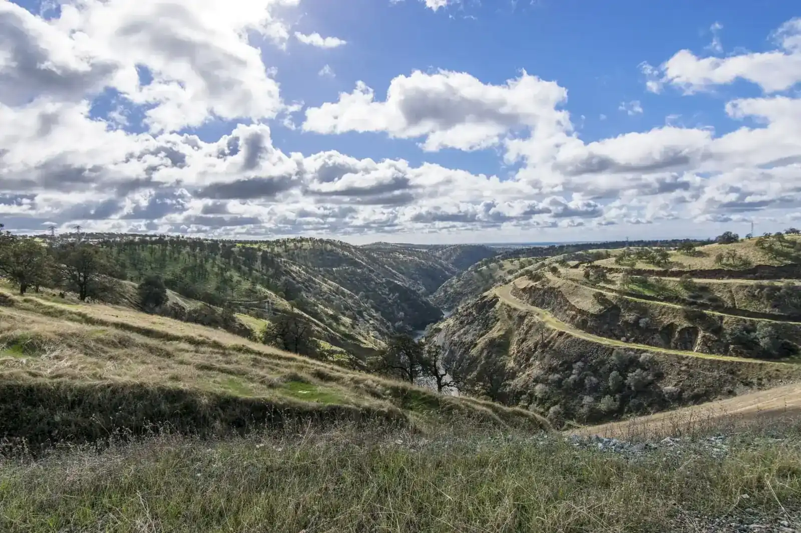

Plan your visit
Everything you need for your first Saturday at Ceres Adventist.
Service times
- 9:30a.m.Sabbath SchoolSaturday · Bible study, all ages
- 11:00a.m.Worship ServiceSaturday · also live on YouTube
- 7:00p.m.Prayer MeetingWednesday · prayer & Bible study
Worship usually runs about length. Stay after for a fellowship potluck on which Sabbaths.
What to expect
- Park and come inParking: describe lot, entrance & accessible spaces
- 9:30 a.m. · Sabbath SchoolSmall-group Bible study. Join any adult class, or bring the kids to theirs.
- 11:00 a.m. · WorshipSinging, prayer, Scripture and a Bible-based message. Prayer is available after the service, up front by the organ.
Wear whatever you’re comfortable in confirm wording.
Sabbath School classes
Every Saturday at 9:30 a.m.
- AdultSanctuary · Junior Room · Earliteen Room
- Cradle Roll & KindergartenCradle Roll Room
- Primary & JuniorKindergarten Room
- Youth & CollegiateYouth Room
From the Oct 24 bulletin. Age ranges confirm.

Good to know
Do I need to bring anything?
No. Bibles and hymnals are in the pews confirm. Just come.
Will I be singled out as a visitor?
No. confirm wording Someone may say hello, but there’s no spotlight.
Why Saturday?
The Bible’s seventh day, the Sabbath, runs from Friday sunset to Saturday sunset. Adventists set it aside for worship, rest and time with family, as Jesus did.
What about my kids?
Sabbath School at 9:30 has classes from cradle roll through youth. Kids stay with their families during worship confirm children’s story.
Is the building accessible?
Confirm wheelchair entrance, accessible parking, restrooms, hearing assistance
Can I watch first?
Yes. Worship streams live on YouTube every Saturday at 11:00 a.m. Watch here.
Getting here
1633 Central Ave
Ceres, CA 95307
209-538-1024
ceresadventist@sbcglobal.net